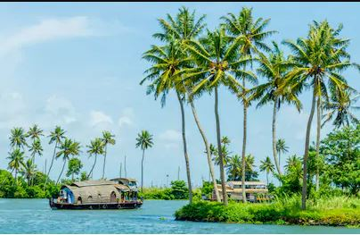

My Childhood
I was born in a town known as mettupalayam in TamilNadu,India. I have spent my half of childhood days here with my grandparents. I would occasionally visit my parents who were staying in kochin, kerala. I have always loved this place and people call this state as Gods own country and it really is. Its full of greenery and majority of this state is under cultivation. It was my favourite vacation spot. The country side scenery is very refreshing and I would give anything to live here. There will be pond, lakes and water streams all around the country. I used to wake up in the morning with birds squeaking and chirping in my windows. My hometown if full of temples and it is a pilgrim spot too. I would recommend my friends to visit kerala atleast once to enoy natural beauty!
I would like to share some beautiful images of kerala
Didnt I say my hometown is a "Land of coconuts". Yes it is! You can see coconut trees everywhere.

No one should miss the aleppey boat house which is world famous

Things to do in kerala:
After spending majority of my childhood days in Kerala, our family moved to pollachi Tamilnadu. The people from this place speak different language. We started getting accustomed to our new place and we made a bunch of friends. I had to move to a different place called "tanjore" for my bachelors degree. It is also know as "Land of Temles". Its one of the most traditional places in Tamilnadu and it has a lot of cultural value. Brihadeeswarar Temple in Tanjore is an architectural marvel and it attracts millions of tourists all over the world every year.
History of Tanjore templeI have covered some placed in south India. Now, lets move to north.
Taj Mahal
THE TAJ MAHAL is widely considered one of the most beautiful buildings ever created. The exquisite marble structure in Agra, India, is a mausoleum, an enduring monument to the love of a husband for his favorite wife. It's also an eternal testament to the artistic and scientific accomplishments of a wealthy empire. Mughal emperor Shah Jahan built the Taj Mahal in Agra, India, as a tribute to his favorite wife, who died in childbirth in 1631. The white marble monument, with its sprawling gardens, took more than 15 years to build.
Visit Taj Mahal
Himalayas
The next major tourist attraction is Himalayas. Himalayas is blessed with nature’s beauty but heritage and architecture as well that acts as major tourist magnet. In some cities like Shimla and Darjeeling, British left their mark; while Dharamshala and Sikkim are adorned by Tibetan Monasteries. Major attractions of Indian Himalayas are The Ridge, Dal Lake, Mughal Gardens, M.G Road (Sikkim), Valley of Flowers National Park and Darjeeling Himalayan Railway
Himalayantourism